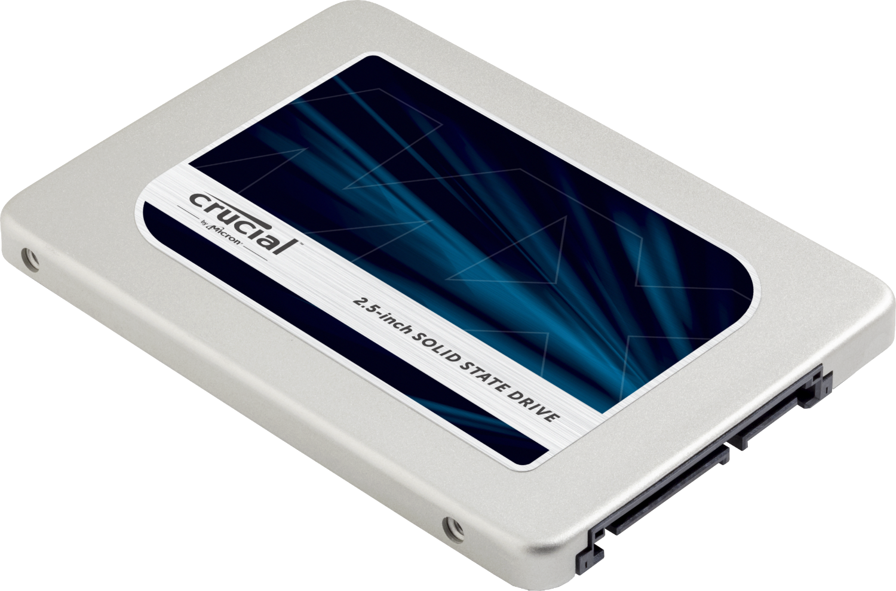

Cómo saber qué hardware integra tu ordenador
Quiere saber qué hardware está en su computadora? Vuélvase un profesional informático con nuestra guía rápida para estos componentes esenciales y sus funciones.
El hardware de la computadora, en términos simples, son los componentes físicos que un sistema de la computadora necesita para funcionar. Abarca todo con una tarjeta de circuito que funciona dentro de una PC o computadora portátil y que incluye la motherboard, la tarjeta gráfica, la CPU (unidad central de procesamiento) los ventiladores, la cámara web, la fuente de alimentación, etc.
Aunque el diseño del hardware difiera entre las PC de escritorio y las computadoras portátiles debido a sus diferencias de tamaño, los mismos componentes centrales se podrán encontrar en ambos. Sin el hardware, no habría manera de ejecutar el software esencial que hace tan útil a las computadoras. El software se define como los programas virtuales que se ejecutan en su computadora, es decir, el sistema operativo, el navegador de Internet, los documentos de procesamiento de texto, etc.
Aunque una computadora puede funcionar solo cuando ambos hardware y software funcionan juntos, la velocidad de un sistema se basará en su mayoría en el hardware usado.
Cuando crea una nueva computadora o simplemente reemplaza las partes antiguas, quizás necesite conocer el hardware específico en su computadora. El objetivo de esta guía es, por lo tanto, ayudarlo a entender el funcionamiento interior de su computadora.
¿Qué es una motherboard?
La motherboard es central en cuanto al funcionamiento de la PC. Aloja la CPU y el centro que atraviesa el resto del hardware. La motherboard actúa como el cerebro. Distribuye la energía donde se necesita al comunicar con y coordinando con todos los demás componentes, convirtiéndola en una de las partes más importantes del hardware en una computadora.
Cuando elija una motherboard, es importante revisar los puertos de hardware que suministra la motherboard. Es vital revisar cuántos puertos de USB hay y de qué grado son (USB 2.0, 3.0, 3.1) como así también qué puertos de información se usan (HDMI, DVI, RGB) y cuántos de cada uno hay. Los puertos en la motherboard también los ayudarán a definir qué otro hardware será compatible con su computadora, como el tipo de RAM y la tarjeta gráfica que puede usar.
Aunque la motherboard es solo una parte del circuito, es la residencia para otra de las partes más importantes del hardware: el procesador.

¿Qué es una CPU (unidad central de procesamiento/procesador)?
La CPU (unidad central de procesamiento o procesador) es la responsable de procesar toda la información para los programas que ejecuta su computadora. La “velocidad reloj”, la velocidad en que el procesador procesa la información, se mide en gigahertz (GHz). Esto significa que una publicidad de procesador con una clasificación alta de GHz probablemente se ejecutará más rápido que un procesdor especificado de manera similar de la misma marca y año.
.jpg)
¿Qué es una RAM?
La memoria de acceso aleatorio, RAM, es un hardware que se encuentra en las ranuras de la memoria de la motherboard. El rol de la RAM es almacenar temporalmente la información sobre la marcha creada por los programas y para hacerlo de una manera que haga que estos datos sean inmediatamente accesibles. Las tareas que necesitan una memoria aleatoria pueden ser: representación de imágenes de diseño gráfico, video o fotografía editadas, multitarea con múltiples aplicaciones abiertas (por ejemplo, ejecutar un juego en una pantalla o mediante una discrepancia en la otra).
Cuánta RAM necesita depende de los programas que esté ejecutando. Los juegos de mediana intensidad generalmente usan 8 GB de memoria cuando se desempeñan junto con otros programas pero el diseño gráfico o los videos pueden usar más de 16 GB de RAM. Obtenga más información sobre cuánta memoria necesita su computadora.
¿Qué es una unidad de disco duro?
La unidad de disco duro es el dispositivo de almacenamiento responsable de almacenar los datos permanentes y temporales. Estos datos vienen en muchas formas diferentes pero es, en definitiva, cualquier cosa guardada o instalada en una computadora, por ejemplo, los programas informáticos, las fotos familiares, el sistema operativo, los documentos de procesamiento de texto, etc.
Existen dos tipos diferentes de dispositivos de almacenamiento: la unidad de disco duro tradicional (HDD) y las unidades de estado sólido más nuevas (SSD). Las unidades de disco duro funcionan al escribir los datos binarios en los discos magnéticos giratorios denominados discos que giran a altas velocidades mientras que la unidad de estado sólido almacena los datos al usar chips de memoria flash estática. Obtenga más información sobre el almacenamiento de la computadora y cómo funcionan las unidades de estado sólido..

Qué es una unidad de procesamiento gráfico (GPU)
Una unidad de alimentacion generalmente abreviado como PSU hace más que solo suministrar energía a su computadora. Es el punto donde ingresa su sistema desde una fuente de alimentación externa y está ubicada en la motherboard para el hardware de componentes individuales. No todos los suministros de alimentación son iguales y sin el voltaje correcto de PSU su sistema fallará.
Una computadora moderna generalmente necesitará una PSU que está calificada entre 500 W y 850 W para suministrar alimentación de forma eficiente a todo el hardware aunque el tamaño de la PSU dependerá completamente del consumo de energía del sistema. Las computadoras que se usan para tareas altamente intensivas como el diseño gráfico o el juego necesitarán más componentes poderosos y, por lo tanto, necesitarán una PSU más grande para encargarse de esta necesidad adicional.
Sin la cantidad correcta de alimentación, los componentes no podrán ejecutarse de forma efectiva y la computadora quizás pueda experimentar fallos o simplemente fallar cuando se inicia. Se recomienda tener un suministro de alimentación que cubra más que el uso de su sistema. No solo se protegerá contra la falla del sistema, también lo hará frente a la necesidad posterior de necesitar una nueva PSU cuando actualice a componentes más poderosos de PC.
Comprender su computadora y los componentes de hardware puede probar que son muy útiles cuando la computadora necesita actualizarse o reemplazar las partes o cuando crea una computadora. Cuando surja un problema con el funcionamiento interno de su computadora, podrá comprender mejor la importancia de cada componente, la necesidad de que estén en buenas condiciones de funcionamiento y cómo resolver cualquier problema.

Keenyerbhet Johann Garcia Martinez CI:31357441 SIDA1 G1 octubre 2021
©2021 Micron Technology, Inc. Todos los derechos reservados. La información, los productos y las especificaciones están sujetos a cambios sin previo aviso. Ni Crucial ni Micron Technology, Inc. se hacen responsables de omisiones o errores tipográficos o fotográficos. Micron, el logotipo de Micron, Crucial y el logotipo de Crucial son marcas registradas o marcas comerciales de Micron Technology, Inc. Todas las demás marcas comerciales o marcas comerciales registradas pertenecen a sus respectivos propietarios.